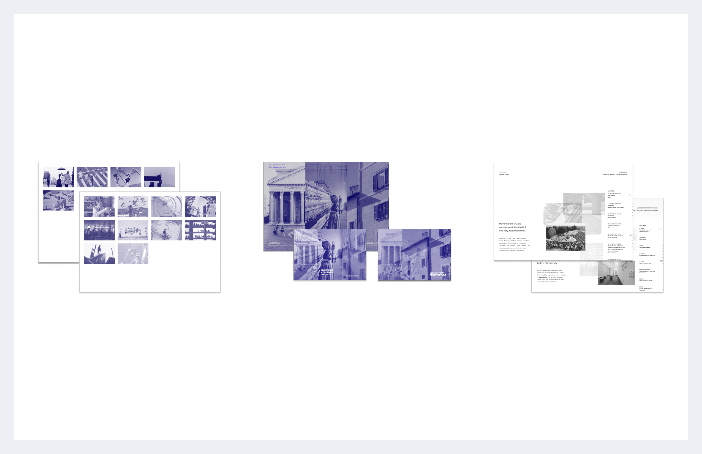
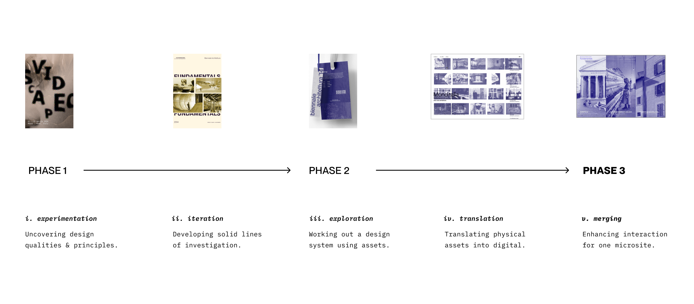
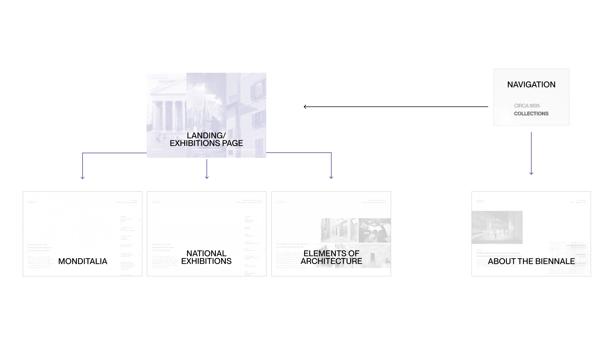
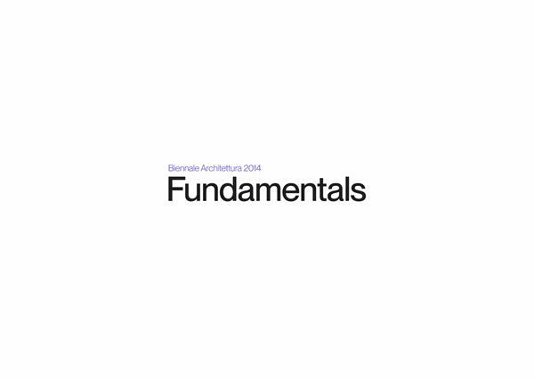
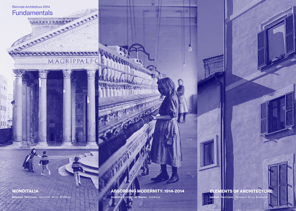
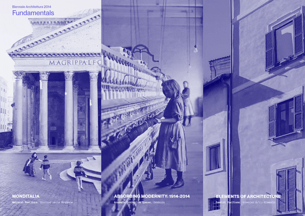
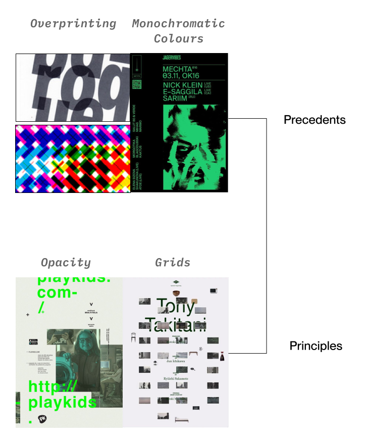

JC
JC

Blossom
Researching and providing a solution to increase user confidence and encourage good habits for lifelong plant care

SUMMARY: As a visual and interaction designer, I built a design system using grid, layered opacity, and monochromatic treatment to organize and balance the exhibition's archival content. I then designed interactions that made the content feel dynamic and contemporary, increasing the visual engagement.
Interaction Designer
Visual Designer
Visual Researcher
Prototyper
Arielle Beltran
Patricia Sugiarta
Joycelyn Tng
Gurmastak Singh
Academic Project
3 Weeks
May 2024
Figma
FigJam
is a major cultural exhibition showcasing contemporary art and architecture from countries around the world.
Specifically, we are designing a microsite that presents an archive of the 2014 Architecture Biennale, Fundamentals.
Fundamentals is a centennial analysis of architecture directed by Rem Koolhaas. It is divided into 3 interlocking exhibitions, Elements of Architecture, Monditalia, and Absorbing Modernity: 1914-2014.

Project Roadmap
Graphic Experimentation
We were inspired by Dutch designer Karel Martens and his use of opacity, closure, and monochromatic imagery.
I helped gather online poster examples representing the design qualities and principles, and organized them into groups to guide the designing process.
Through a series of graphic experiments, we combined three key qualities from his work with two design principles from Ellen Lupton, resulting in three distinct lines of inquiry that that formed the foundation of our posters.
Graphic Experimentation
Using each line of inquiry, my team created physical assets to examine how translatable each design system was into other formats.
Through our explorations, we were able to see our first and third lines of inquiry being more successful as a flexible system. This exploration helped refine composition, hierarchy, and visual language across each investigative direction.
I contributed by gathering and curating a wide range of imagery to support the visual development of the concepts.
Art Direction
This stage focused on adapting static visual explorations into interactive digital environments.
We combined the first and third lines of inquiry and translated their qualities and principles into visual design and interaction strategies:
We developed three directions, from least to most expressive. I created medium-fidelity prototypes for all pages of the least expressive direction (Direction 1).
Art Direction
We selected the least expressive direction for the final microsite because it prioritized the exhibition content, enabling users to focus on the imagery and their meaning.
The design uses a monochrome blue palette inspired by Italian visual references, supporting clarity while subtly connecting to the Biennale’s cultural context and the theme Fundamentals.
Typography was led by Joyce and combines serif and sans-serif typefaces to create hierarchy and contrast. Neue Montreal was chosen for its clarity, versatility, and strong readability across print and digital formats while maintaining a contemporary tone.
I collected and selected imagery from both external references and the exhibition itself.
Art Direction

Site Map
This is the content structure of our final microsite.
We removed the artifacts page to keep the focus on the exhibition rather than the physical assets produced for the event.
Interaction Design
I developed medium-fidelity prototypes of the interaction design and all pages for this direction, while a groupmate focused on the exhibition page content layout. The interactions are minimal and subtle so they could support the experience without distracting from the content.
For the homepage, the layout was inspired by a three-column structure. I experimented with opacity and overlaying as an interactive element, encouraging users to explore the different navigation tabs and engage with the content.
Column Inspiration from SFU Italia Design 2014 (Image)
Interaction Design
The initial interaction required users to drag images across the screen. This was intended to make the microsite more interactive and encourage users to engage more closely with the exhibition imagery. However, through testing, I found that while the interaction was engaging at first, it could become distracting and tiring, as users had to repeatedly move images to navigate the content.
To improve the experience, I refined the dragging interaction into animated page transitions. This maintained a sense of engagement while allowing users to focus more on the content itself, creating a balance between interaction and usability.
For the exhibition pages, our initial concept displayed multiple overlapping images when a chapter was selected. We later refined this approach by assigning a single image to each chapter. When users hover over different chapter links, the corresponding image overlays the previous image, allowing traces of earlier images to remain visible. This creates a sense of layering and accumulation, reflecting the visual language established in our earlier design explorations and visually connecting the different chapters together.
I designed and prototyped the final landing page animation and interaction, as well as the exhibition page transitions (Monditalia, Absorbing Modernity, and Elements of Architecture) using Figma components, revealing each image sequentially.

Landing Page
Monditalia (Exhibition)

Absorbing Modernity (Exhibition)

Elements of Architecture (Exhibition)
Circa 1895 (About Page)
Design Overview

Design Qualities & Principles
Design System
KEY INTERACTIONS
Animated Transitions on Click
Image Overlays on Hover
I gained a stronger understanding of the importance of imagery and significantly developed my design skills throughout the project. The graphic experimentation phase was especially valuable, as it allowed me to explore and combine design qualities and principles in a cohesive, user-centered way. I also learned how to translate physical assets into a digital context and design interactions that meaningfully support the content.
If I had more time, I would like to further explore content design. Overall, I really enjoyed working on this project as it gave me the opportunity to experiment extensively. Despite the limited timeframe, I was able to explore a wide range of design directions and interaction ideas, from research through to the development of a cohesive design system. My team also noted that my design eye has improved since the beginning of the course:).
Researching and providing a solution to increase user confidence and encourage good habits for lifelong plant care
Creating a non-interface solution for Prosper Vancouver to increase engagement and retention